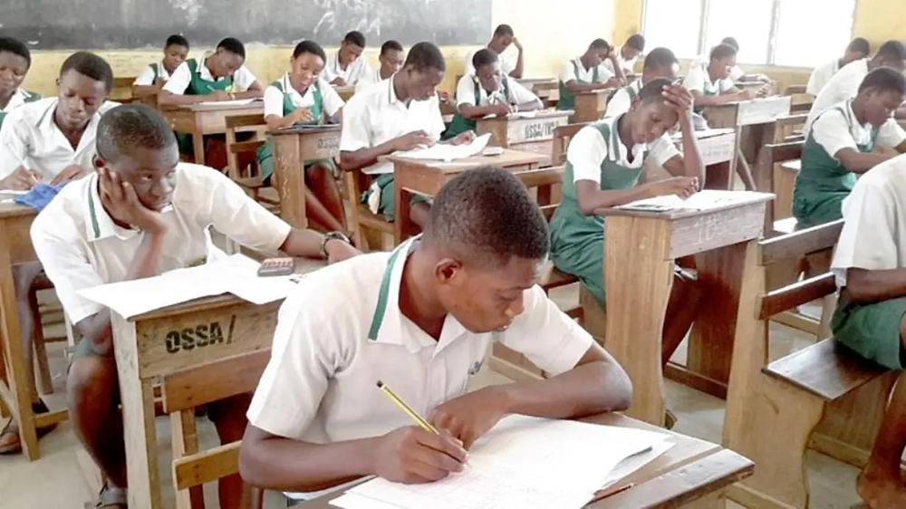

Meet team Sucess2024@ Examsuccess.ng
Examsuccess.ng is the 100% guaranteed link betwen you and flying colours in JAMB | WAEC | NECO | NABTEB | GCE | IJMB & JUPEB Examinations.

Examsuccess.ng as the leading famous examination specialist since 2011, over thousands of Nigeria students made excellent Result from this site Examsuccess.ng Our candidates get their exam questions and answers midnight/7hrs before exam under us... our source remain the best of all when it come to examination assistance specialist...
NOTE: if you are directed here, then use our assistance help desk to avoid any regret in return. We confirmed and verified before distribution.
You don't need to panic, because you wont need to take your phone along with you to examination center. So far our assistance is to be surely delivered midnight before exam.
Do you know that about two million candidates write WAEC every year? Out of those two million, less than 40% pass every year.
Let me tell you one truth today,
WAEC IS HARD!
Remember, it is different from your school exams where the teachers you know set your questions.
Let me tell you the story of a brilliant school boy, Silas. He wrote WAEC two years ago. He was the best student in his school and he even represented his school in different competitions, including The Mathematics Cowbell Competition. During his WAEC, some of his classmates paid for Runz but Silas said he won't use Runz. He relied on his pure knowledge, because he always passed his school exams and won competitions.
Silas forgot that WAEC is not set by his school teachers and that WAEC is harder than he thought. WAEC is not about reading all textbooks back to back, but about knowing how to write exactly what the examiner wants.After his WAEC, result came out. To cut the long story short, Silas is yet to gain admission meanwhile majority of his friends that used RUNZ are already in school. I know of Otaobori Jasope who is now studying Medicine and Surgery in Unilag. This is a true life story. The truth is if you Pass or Fail, Nigeria does not care! WAEC will only be happy to collect your money for registration again next year.
BUT WHY WILL YOU ALLOW NIGERIA AND WAEC TO WASTE YOUR TIME AND PLAY WITH YOUR FUTURE WHEN YOU CAN PASS ONCE BY USING OUR 100% LEGIT RUNZ?
Here at Examsuccess.ng, we work directly with WAEC officials that supplies us with Questions a Midnight to exam, We get papers first before any other dealer or site in Nigeria, Our solutions are always 100% Accurate.
NOTE:
You may see other website or other people telling you to subscribe with them but I tell you, majority of these people are students like you, they also pay us to get the questions. So why don't you just subscribe with the direct source?
WE HAVE HELPED OVER 100,000 CANDIDATES TO HAVE FANTASTIC AND WONDERFUL RESULTS IN
2011,2012,2013,2014,2015,2016,2017,2018,2019 AND LIKEWISE 2020....
MEAN WHILE 2024 will not be an EXCEPTION AT ALL. BELIEVE ME
SERIOUSLY YOU HAVE NO REASON AT ALL TO WORRY YOURSELF OR EVEN PANIC..
DO YOU KNOW WHY BECAUSE YOU ARE AT THE RIGHT PLACE AND AT THE RIGHT TIME, THANK YOUR STARS THAT YOU FOUND Examsuccess.ng
Do you know that if you are seeking admission
into university or polytechnic, you must have
A/B in your WAEC/NECO/GCE/NABTEB result because
it gives you better chance than those WITH C.
If you really want to have A/B in your results,
make sure you pay for our runz,
that is the only way to secure your admission.
Our 2024 WAEC Expo Subscription has started and all interested Candidates for the 2024
For WAEC Examination runz expo, you should start subscribing as soon as possible. WHATS-APP0907 375 3482
Note: Our WAEC RUNS/RUNZ Answers come Midnight/7 hours before the exam (Verified Answers)
Steps to get 2024 WAEC QUESTIONS and Answers | 2024 WAEC Expo.
But before we discuss further on that I want you to look at the procedures and benefits:
BENEFITS OF PAYMENT BEFORE EXAM:
(i) You are automatically a VIP.
(ii) You will be registered on our Database where you can confirm your subjects to make sure there is no mistake on your subjects
(iii) You will get special attention from us.
(iv)We can call or text you anytime if any update comes up.
LISTS OF AVAILABLE SUBJECTS FOR 2024 WAEC QUESTIONS AND ANSWERS:
Are you ready to pass your exam with A's at one sitting? If your answer is yes, below are the subjects that are available with the subscription fee:
- English
- Mathematics
- Biology
- physics
- Chemistry
- Literature
- Government
- Geography
- Economics
- Commerce
- Accounting
- Agricultural science
- Further Mathematics
- CRS
- Igbo
- Yoruba
- Hausa
NEWLY INTRODUCED SUBJECTS:
- Office Practical
- Marketing
- Insurance
- I.C.T
- Civic Education (Compulsory)
- Data Processing
- Physical Health Education
- Health Science
- Animal Husbandry
- Book Keeping
- Computer Studies
- Health Education
- Available Practicals:
- Agric
- Physics
- Chemistry
- Animal Husbandry
- Biology
WAEC 2024/2025 SUBSCRIPTION PRICES, SELECT AND MAKE YOUR PAYMENT:
All Science Answers To get all the Science Answers cost: #6,000All Art Answers To get all the Art Answers cost: #5,000
All Commercial Answers To get all the Commercial Answers cost: #5,000
All Subjects (science+Art+Commercial) Password & Link: N15,000
All subjects (science+Art+Commercial) Questions & Answers via Whatsapp: N20,000
School Owners/Principal/webmasters/VIP-All the subjects Answers Cost: #50,000
Per subject Price (Password pin & Link: #600
Per subject Price (Whats app Answers Delivery): #700
English Only costs: N1000
Mathematics Only costs: N1000
Means of sending out our Answers Through Whatsapp or via password pin & link.
PAYMENT THROUGH BANK:
Chat Us On Whats App for our Account Num:0907 375 3482
Text "I need Bank details"
PAYMENT THROUGH MTN RECHARGE CARD:
SEND THE FOLLOWING TO US ON WHATSAPP:0907 375 3482 Only
(i)MTN - CARD
(ii)AMOUNT PAID
(iii)EXAM NAME
(iv)PHONE NUMBER
(v)SUBJECTS
SEND THE FOLLOWING TO US ON WHATS APP:
0907 375 3482 Only
PAYMENT FOR BULK SUBJECTS, GROUP AND PASSWORD LINK CONTACT US ON WHATSAPP:
JOIN GROUP NOW
NOTE: You may see cheaper prices somewhere else, but I bet it with you, you may regret subscribing with them. Can you compare a cheap phone bought from Aboki inside show glass with the expensive original one bought from a phone store? Never!
I believe you don't wish to fail. We also buy this papers with a lot of money. If you go with the cheap people, expect them to send your answers after exam has ended.
HOWEVER, You can always message us on Whats app to negotiate the price. We know the situation of the country, we will reason with you.